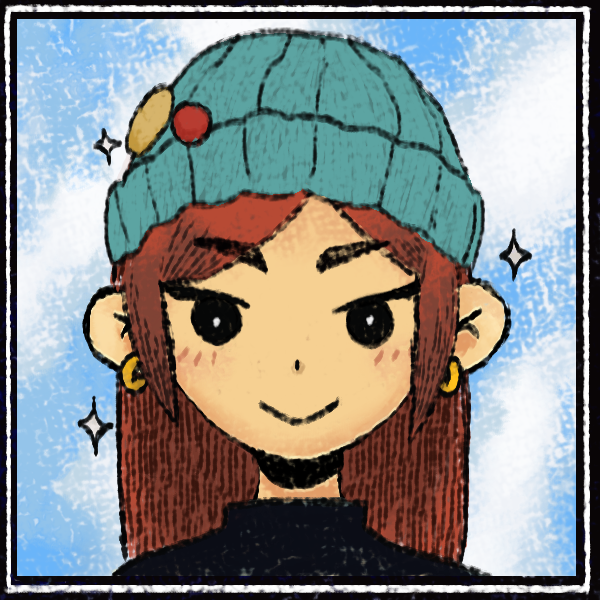

Hi, I'm Kaelynn Amodia!

OBJECTIVE
I'm seeking a game design and development position where I can develop my scripting and design skills to actively influence the development of innovative and high-performance interactive experiences.
EDUCATION
Rochester Insistute of Technology (Sept. 2021 - Dec. 2024)
- Bachelor of Science, Game Design and Development
Bergen Community College (Sept. 2019 - May 2021)
- Early College Program, Associate's Degree in Applied Science
SKILLS
Programming Languages:
- C#
- C++
- HTML
- CSS
- JavaScript
- OpenGL
- Node.js
Tools:
- Visual Studio
- VS Code
- Unity
- Unreal
- GitHub
- Figma
- MonoGame
- Maya
- After Effects
- Clip Studio Paint
- Adobe Photoshop
PROJECTS
PIN-BRAWL | Academic Team Project
Fall 2024
- Developed a multiplayer platformer fighting game in Unity in a team of 5
- Led UI/UX design and animations, implementing and improving the game’s menus and game loop
Spring 2023
- Developed a top-down virtual puzzler horror game in Unity in a team of 5
- Lead sound designer, assisted in developing visual assets, as well as implemented and improved UI/UX design
Fall 2022
- Developed a web application using HTML, CSS and JavaScript
- Independently implemented all functions of a basic clicker game, also designing the UI/UX to create a pleasing aesthetic
WORK EXPERIENCE
UI/UX Designer and Web Developer - RIT "Looking for Group (LFG)"
May 2024 - Dec. 2024
- Collaborated with a team to design and develop an upcoming website looking to connect individuals interested in building software and digital media based projects
- Worked with other designers to create low and high-fidelity wireframes and develop interactive prototypes using Figma
- Conducted research and analyzed user feedback to inform significant design decisions and enhance the user experience
Lab Assistant - RIT CADTech
Sept. 2023 - May 2024
- Managed and provided technical support within the College of Art and Design, including file/web services, printing, software troubleshooting, etc.
- Utilized strong problem-solving abilities to research, document, and implement solutions
- Provided excellent customer service and assisted student and staff while working in a team-oriented environment
IT Technician - RIT Information and Technology Services
March 2023 - August 2023
- Manage domain bound and personal machines, providing technical services such as virus removal, data recovery, computer imaging, software troubleshooting, and hardware repairs
- Assists students and staff both remotely and in-person, providing customer service and computer troubleshooting while working in a team-oriented environment
EXTRACURRICULARS
Dance Captain/President - RIT NOVA Dance Crew
Sept. 2022 - May 2024
- Founded RIT’s first ever K-POP dance crew with 2 others that now has 100+ members, organizing and leading regular workshops, performances, and events to promote club activities and build our audience